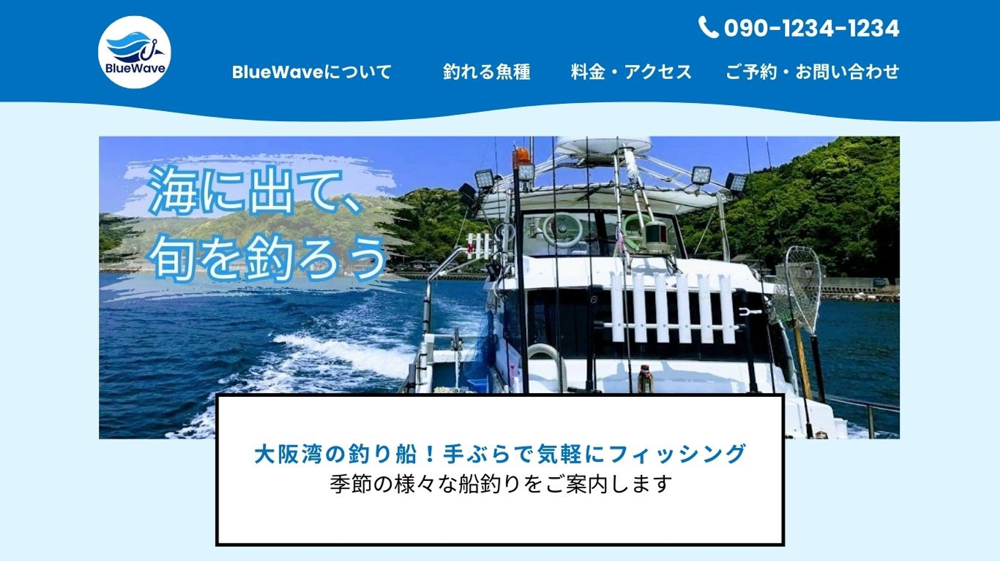
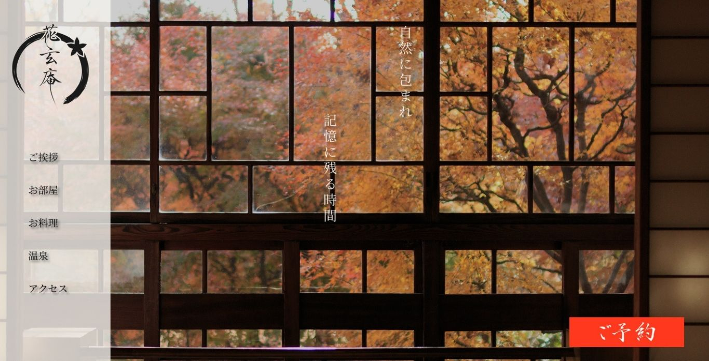

架空の釣り船サービスのWebサイトです。
レスポンシブ対応を行い、スマートフォンでも閲覧しやすい設計を意識しました。
ターゲット：若年層や家族層の客
目的：予約につなげる
使用技術：HTML / CSS / JavaScript / jQuery
レスポンシブ対応
制作期間：ワイヤー2日 / デザイン 2日 / コーディング 5日
仕様したツール：Photoshop / illustrator / VisualStudioCode

架空の温泉宿のWebサイトです。
レスポンシブ対応を行い、スマートフォンでも閲覧しやすい設計を意識しました。
ターゲット：若年層の客
目的：予約につなげる
使用技術：HTML / CSS / JavaScript / jQuery
レスポンシブ対応
制作期間：ワイヤー2日 / デザイン 3日 / コーディング 9日
仕様したツール：figma / Canva / VisualStudioCode